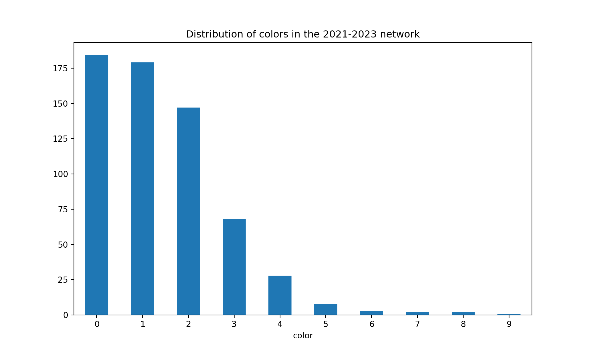
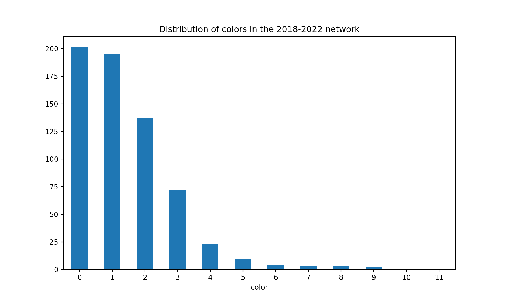
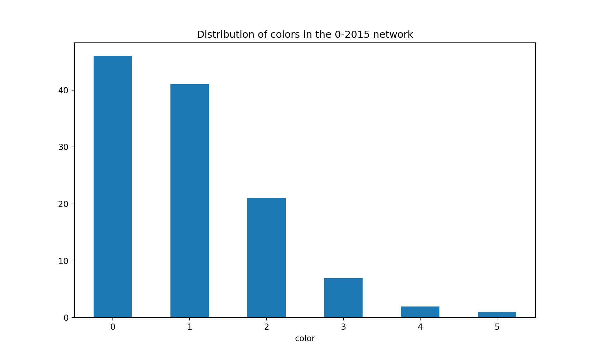

A focus on authors, articles, references with networks
Authors
Affiliation
Olivier Caron
Paris Dauphine - PSL
Christophe Benavent
Paris Dauphine - PSL
Published
November 17, 2023
1 Purpose
Code
cowsay::say("After researching the articles and references by making graphs tobetter visualize the structure of the research. We want to focushere on the authors, trying to understand how communities evolve over time.")
--------------
After researching the articles and references by making graphs to
better visualize the structure of the research. We want to focus
here on the authors, trying to understand how communities evolve over time.
--------------
\
\
\
|\___/|
==) ^Y^ (==
\ ^ /
)=*=(
/ \
| |
/| | | |\
\| | |_|/\
jgs //_// ___/
\_)
We need to check if there are more than one unique authorname per authid. If so, we need to change the different names of author to the same name in order to have the exact same node per author later in the network.
Code
test <- list_articles %>%group_by(authid) %>%select(authid, authname, entry_number) %>%mutate(n =n())result <- test %>%group_by(authid) %>%filter(n_distinct(authname) >1) %>%distinct(authid, .keep_all =TRUE)result %>%reactable()
Code
number_duplicates <-nrow(result)cat("There are ", number_duplicates, " authors registered with different names.")
There are 25 authors registered with different names.
2.3 Correct the duplicate names
Let’s correct that by using one property of the distinct function: the .keep_all = TRUE parameter. It keeps the first occurrence of each group, which is the first row encountered for each unique combination of authid and authname. It will be faster than manually changing the name of each author.
Code
# Merge list_articles with result on the authid columnmerged_df <-left_join(list_articles, result, by ="authid")# Replace authname values in list_articles with those from resultlist_articles$authname <-ifelse(!is.na(merged_df$authname.y), merged_df$authname.y, list_articles$authname)# Keep only marketing articles and filter "Erratum" type of publications (=correction)list_articles <- list_articles %>%filter(marketing ==1) %>%filter(subtypeDescription !="Erratum")cat("There are", n_distinct(list_articles$entry_number), "articles and", n_distinct(list_articles$authname), "authors overall in the data.")
There are 404 articles and 976 authors overall in the data.
Code
# Write the updated dataframe to a CSV file write_csv2(list_articles, "nlp_full_data_final_unique_author_names.csv")
It is now done. We can check again if there are more than one unique authorname per authid.
2.4 Verification of duplicate names
Code
test <- list_articles %>%group_by(authid) %>%select(authid, authname, entry_number) %>%mutate(n =n())result <- test %>%group_by(authid) %>%filter(n_distinct(authname) >1) %>%distinct(authid, .keep_all =TRUE) %>%relocate(entry_number)result %>%reactable()
It’s alright, we can now continue on constructing the data frames for the networks.
This is a basic visualization done with the NetworkX library and matplotlib.
Code
```{python}#| label: network-visualization#| fig-cap: Visualization of the co-authorship network for the 2022-2023 period, created using NetworkX and matplotlib.#| fig-align: center#plt.figure(figsize=(20,20))#pos = nx.kamada_kawai_layout(G)#nx.draw(G, with_labels=True, node_color='skyblue', edge_cmap=plt.cm.Blues, pos=pos)```
Caution
This is not interactive and the result is not enlightening at all. We then decide to use Pyvis to create an interactive visualization.
3.2 Network visualization with Pyvis
Tip
Pyvis enables us to create interactive visualizations and modify the network layout in real time with the net.show_buttons(filter_=['physics']) command. This button then generates options to include in our code by using the net.set_options() function. More information here.
```{python}#| label: community-detection-louvain#| output: false#import community as community_louvain# Compute the best partition#communities = community_louvain.best_partition(G)#dftest = pd.DataFrame(list(communities.items()), columns=['authname', 'community'])#nx.set_node_attributes(G, communities, 'group')```
import randomimport community as community_louvain# Fix the seed for reproducibilityrandom.seed(42)G_2021_2023, df_2021_2023 = sigma_graph(list_articles, 2021, 2023)colors = nx.greedy_color(G_2021_2023, strategy='largest_first', interchange=False)colorsdf = pd.DataFrame.from_dict(colors, orient='index', columns=['color'])#plot distribution of colorscolorsdf['color'].value_counts().plot(kind='bar', figsize=(10, 6), rot=0, title="Distribution of colors in the 2021-2023 network")plt.show()

Code
#detect how many commmunities there are in the graphcommunities = community_louvain.best_partition(G_2021_2023)print("There are {} communities in the 2021-2023 network".format(len(set(communities.values()))))
There are 170 communities in the 2021-2023 network
Code
#print("The density of the graph is {}".format(round(nx.density(G_2022_2023), 6)))
G_2018_2022, df_2018_2022 = sigma_graph(list_articles, 2018, 2022)colors = nx.greedy_color(G_2018_2022, strategy='largest_first', interchange=False)colorsdf = pd.DataFrame.from_dict(colors, orient='index', columns=['color'])#plot distribution of colorscolorsdf['color'].value_counts().plot(kind='bar', figsize=(10, 6), rot=0, title="Distribution of colors in the 2018-2022 network")plt.show()

Code
#print("The density of the graph is {}".format(nx.density(G_2018_2021))communities = community_louvain.best_partition(G_2018_2022)print("There are {} communities in the 2018-2022 network".format(len(set(communities.values()))))
There are 179 communities in the 2018-2022 network
G_2015_2019, df_2015_2019 = sigma_graph(list_articles, 2015, 2019)colors = nx.greedy_color(G_2015_2019, strategy='largest_first', interchange=False)colorsdf = pd.DataFrame.from_dict(colors, orient='index', columns=['color'])#plot distribution of colorscolorsdf['color'].value_counts().plot(kind='bar', figsize=(10, 6), rot=0, title="Distribution of colors in the 2015-2019 network")plt.show()
Code
#print("The density of the graph is {}".format(nx.density(G_2013_2017))communities = community_louvain.best_partition(G_2015_2019)print("There are {} communities in the 2015-2019 network".format(len(set(communities.values()))))
G_2014_2019, df_2014_2019 = sigma_graph(list_articles, 2014, 2019)colors = nx.greedy_color(G_2014_2019, strategy='largest_first', interchange=False)colorsdf = pd.DataFrame.from_dict(colors, orient='index', columns=['color'])#plot distribution of colorscolorsdf['color'].value_counts().plot(kind='bar', figsize=(10, 6), rot=0, title="Distribution of colors in the 2014-2019 network")plt.show()
Code
communities = community_louvain.best_partition(G_2014_2019)print("There are {} communities in the 2014-2019 network".format(len(set(communities.values()))))
G_0_2015, df_0_2015 = sigma_graph(list_articles, 0, 2015)colors = nx.greedy_color(G_0_2015, strategy='largest_first', interchange=False)colorsdf = pd.DataFrame.from_dict(colors, orient='index', columns=['color'])#plot distribution of colorscolorsdf['color'].value_counts().plot(kind='bar', figsize=(10, 6), rot=0, title="Distribution of colors in the 0-2015 network")plt.show()

Code
communities = community_louvain.best_partition(G_0_2015)print("There are {} communities in the 0-2015 network".format(len(set(communities.values()))))
There are 46 communities in the 0-2015 network
3.5 An interesting metric: the graph density
The graph density is the ratio of the number of edges to the maximum number of possible edges. It is a measure of the proportion of edges present in a graph. A graph with a high density has a large number of edges compared to the number of nodes. A graph with a low density has a small number of edges compared to the number of nodes.
A more formal definition is given here by the following formulas:
where \(n\) is the number of nodes and \(m\) is the number of edges in the graph.
From an interpretation standpoint, we can appreciate the density in the graphs bellow as follows:
\(d\)
Interpretation
Close to \(0\)
The collaborative relationships among authors are sparse:
Authors have limited connections with each other outside of their community.
Scientific papers are primarily the work of individual authors or small isolated groups.
Close to \(1\)
Authors frequently collaborate with one another, leading to a web of interconnected scientific collaborations.
Scientific papers often involve contributions from multiple authors, reflecting a high level of teamwork and interdisciplinary research.
Collaborations are a significant aspect of the research process in this marketing field, and authors actively seek out opportunities to work together.
The network of collaborations is well-established and robust, facilitating the exchange of ideas and the advancement of scientific knowledge.
3.5.1 Evolution of the graphs’ density
Code
def average_degree(G):# Calculate the sum of degrees of all nodes total_degree =sum(dict(G.degree()).values())# Divide by the number of nodes to get the average degree avg_degree = total_degree / G.number_of_nodes()return avg_degreedef linear_density(G):iflen(G.nodes()) ==0: # Pour éviter une division par zéroreturn0returnlen(G.edges()) /len(G.nodes())# Create a dataframe with the density of each graph#density_df = pd.DataFrame({#'period': ['before-2013', '2013-2017', '2018-2021', '2022-2023'],#'density': [#nx.density(G_before_2013),#nx.density(G_2013_2017),#nx.density(G_2018_2021),#nx.density(G_2022_2023)#],#'average_degree': [#average_degree(G_before_2013),#average_degree(G_2013_2017),#average_degree(G_2018_2021),#average_degree(G_2022_2023)#],#'linear_density': [#linear_density(G_before_2013),#linear_density(G_2013_2017),#linear_density(G_2018_2021),#linear_density(G_2022_2023)#]#})
Code
#library(Hmisc)# Load the 'density_df' dataframe from Python using reticulate#testtransfer <- py$density_df# Specify the order of categories for the 'period' column#testtransfer$period <- factor(testtransfer$period, levels = c('before-2013', '2013-2017', '2018-2021', '2022-2023'))# Use the 'gt()' function to display the dataframe#testtransfer %>%#rename_all(Hmisc::capitalize) %>%#gt() %>%#tab_style(#style = cell_text(weight = "bold", align = "center"),#locations = cells_column_labels()#)# Create the Plotly graph#fig <- plot_ly(testtransfer, x = ~period, y = ~density, type = 'scatter', mode = 'lines+markers', #text = ~paste("Period=", period, "<br>Density=", density), hoverinfo = "text")# Show the graph#fig <- fig %>% layout(template = "plotly_white")#fig
4 Graph density of references
Code
# Create a dataframe with the density of each graph#density_df_references = pd.DataFrame({#'period': ['before-2013', '2013-2017', '2018-2021', '2022-2023', 'overall'],#'density': [#nx.density(G_before_2013_references), #nx.density(G_2013_2017_references), #nx.density(G_2018_2021_references), #nx.density(G_2022_2023_references),#nx.density(G_overall_references)#],#'average_degree': [#average_degree(G_before_2013_references),#average_degree(G_2013_2017_references),#average_degree(G_2018_2021_references),#average_degree(G_2022_2023_references),#average_degree(G_overall_references)#],#'linear_density': [#linear_density(G_before_2013_references),#linear_density(G_2013_2017_references),#linear_density(G_2018_2021_references),#linear_density(G_2022_2023_references),#linear_density(G_overall_references)#]#})
```{r}#| label: citations-graph-density-comparison#| fig.cap: Comparison of network densities and average degree of nodes over time#| column: body-outset# Density plotdensity_plot <-ggplot() +geom_line(data = py$density_df, aes(x = period, y = density, colour ="Collaboration Density", group=1, text =paste("Period:", period, "<br>Density:", density)), linewidth=1) +geom_line(data = py$density_df_references %>%filter(period !="overall"), aes(x = period, y = density, colour ="References Density", group=1, text =paste("Period:", period, "<br>Density:", density)), linewidth=1) +scale_y_continuous(name ="Graphs Density") +scale_x_discrete(limits =c("before-2013", "2013-2017", "2018-2021", "2022-2023")) +xlab("Period") +ggtitle("Comparison of Network Density Over Time") +theme_minimal()# Linear density plot (m/n)linear_density_plot <-ggplot() +geom_line(data = py$density_df, aes(x = period, y = linear_density, colour ="Collaboration Linear Density", group=1, text =paste("Period:", period, "<br>Linear Density:", linear_density)), linewidth=1) +# Adjusted for the new column "linear_density"geom_line(data = py$density_df_references %>%filter(period !="overall"), aes(x = period, y = linear_density, colour ="References Linear Density", group=1, text =paste("Period:", period, "<br>Linear Density:", linear_density)), linewidth=1) +# Adjusted for the new column "linear_density"scale_y_continuous(name ="Graphs Linear Density") +scale_x_discrete(limits =c("before-2013", "2013-2017", "2018-2021", "2022-2023")) +xlab("Period") +ggtitle("Comparison of Network Linear Density Over Time") +theme_minimal()# Create average degree plotavg_degree_plot <-ggplot() +geom_line(data = py$density_df, aes(x = period, y = average_degree, colour ="Collaboration Average Degree", group=1, text =paste("Period:", period, "<br>Average Degree:", average_degree)), linewidth=1) +# Corrected heregeom_line(data = py$density_df_references %>%filter(period !="overall"), aes(x = period, y = average_degree, colour ="References Average Degree", group=1, text =paste("Period:", period, "<br>Average Degree:", average_degree)), linewidth=1) +scale_y_continuous(name ="Nodes Average Degree") +scale_x_discrete(limits =c("before-2013", "2013-2017", "2018-2021", "2022-2023")) +xlab("Period") +ggtitle("Comparison of Network Average Degree Over Time") +theme_minimal()# Combine density and average degree plotsdensity_plot / linear_density_plot / avg_degree_plotggsave("images/citations-graph-density-comparison.png", width=270, height=180, units="cm", dpi=300)```
---title: "Systematic literature review"bibliography: references.bibtitle-block-banner: truesubtitle: "A focus on authors, articles, references with networks"author: - name: Olivier Caron email: olivier.caron@dauphine.psl.eu affiliations: name: "Paris Dauphine - PSL" city: Paris state: France - name: Christophe Benavent email: christophe.benavent@dauphine.psl.eu affiliations: name: "Paris Dauphine - PSL" city: Paris state: Francedate : "last-modified"toc: truenumber-sections: truenumber-depth: 10format: html: theme: light: yeti #dark: darkly code-fold: true code-summary: "Display code" code-tools: true #enables to display/hide all blocks of code code-copy: true #enables to copy code grid: body-width: 1000px margin-width: 100px toc: true toc-location: leftexecute: echo: true warning: false message: falseeditor: visualfig-align: "center"highlight-style: ayucss: styles.cssreference-location: margin---## Purpose```{r}#| label: introductioncowsay::say("After researching the articles and references by making graphs tobetter visualize the structure of the research. We want to focushere on the authors, trying to understand how communities evolve over time.")```## Libraries and preparing data```{python}#| label: load-libraries-python#| echo: false#Librariesimport pandas as pdimport numpy as npimport networkx as nximport matplotlib.pyplot as pltimport plotly.express as pximport refrom ipysigma import Sigma, SigmaGridfrom itertools import combinationsfrom datetime import datetimefrom functools import partial#Datadata = pd.read_csv("data_final.csv")data.rename(columns={'citedby-count': 'citedby_count'}, inplace=True)# Remove useless characters to keep scopus_id only (e.g. "2-s2.0-85152647358'" becomes "85152647358")data['eid'] = data['eid'].str.split('-').str[-1]list_articles = pd.read_csv("nlp_full_data_final_18-08-2023.csv", sep=';', decimal=',')list_articles = list_articles[list_articles['marketing'] ==1] #only marketing articles# Merge the "topic" and "topic_name" columns from the "data" dataframe into "list_articles"# We do that to have the topic of each article in the list_articles dataframelist_articles = list_articles.merge(data[['entry_number', 'topic', 'topic_name']], on='entry_number', how='left')list_references = pd.read_csv("nlp_references_final_18-08-2023.csv", sep=';', decimal=',')```### Summary of the authors data```{r}#| label: summary-authors-data#| column: screen-inset-right#| echo: fencedlibrary(tidyverse)library(reactable)library(gt)library(skimr)library(plotly)library(reticulate)library(patchwork)list_articles <-read_csv2("nlp_full_data_final_18-08-2023.csv") %>%mutate(marketing =as.logical(marketing)) %>%mutate(authid =as.character(authid)) %>%mutate(afid =as.character(afid)) %>%mutate(entry_number =as.character(entry_number)) %>%mutate(source_id =as.character(source_id)) %>%mutate(article_number =as.character(article_number)) %>%mutate(openaccess =as.logical(openaccess))skim(list_articles) #%>%#filter(!skim_type %in% c("logical"))```### Check name of authorsWe need to check if there are more than one unique `authorname` per `authid`. If so, we need to change the different names of author to the same name in order to have the exact same node per author later in the network.```{r}#| label: load-libraries-rtest <- list_articles %>%group_by(authid) %>%select(authid, authname, entry_number) %>%mutate(n =n())result <- test %>%group_by(authid) %>%filter(n_distinct(authname) >1) %>%distinct(authid, .keep_all =TRUE)result %>%reactable()number_duplicates <-nrow(result)cat("There are ", number_duplicates, " authors registered with different names.")```### Correct the duplicate namesLet's correct that by using one property of the distinct function: the `.keep_all = TRUE` parameter. It keeps the first occurrence of each group, which is the first row encountered for each unique combination of `authid` and `authname`. It will be faster than manually changing the name of each author.```{r}#| label: change-data-authors# Merge list_articles with result on the authid columnmerged_df <-left_join(list_articles, result, by ="authid")# Replace authname values in list_articles with those from resultlist_articles$authname <-ifelse(!is.na(merged_df$authname.y), merged_df$authname.y, list_articles$authname)# Keep only marketing articles and filter "Erratum" type of publications (=correction)list_articles <- list_articles %>%filter(marketing ==1) %>%filter(subtypeDescription !="Erratum")cat("There are", n_distinct(list_articles$entry_number), "articles and", n_distinct(list_articles$authname), "authors overall in the data.")# Write the updated dataframe to a CSV file write_csv2(list_articles, "nlp_full_data_final_unique_author_names.csv")```It is now done. We can check again if there are more than one unique `authorname` per `authid`.### Verification of duplicate names```{r}#| label: check-unique-name-authorstest <- list_articles %>%group_by(authid) %>%select(authid, authname, entry_number) %>%mutate(n =n())result <- test %>%group_by(authid) %>%filter(n_distinct(authname) >1) %>%distinct(authid, .keep_all =TRUE) %>%relocate(entry_number)result %>%reactable()```It's alright, we can now continue on constructing the data frames for the networks.## Co-authorship networks```{python}#| label: network-creation#G = nx.from_pandas_edgelist(network_data_2022_2023, 'authname1', 'authname2', edge_attr='value', create_using=nx.Graph())```### Network basic visualizationThis is a basic visualization done with the NetworkX library and matplotlib.```{python}#| label: network-visualization#| echo: fenced#| fig-cap: Visualization of the co-authorship network for the 2022-2023 period, created using NetworkX and matplotlib.#| fig-align: center#plt.figure(figsize=(20,20))#pos = nx.kamada_kawai_layout(G)#nx.draw(G, with_labels=True, node_color='skyblue', edge_cmap=plt.cm.Blues, pos=pos)```::: callout-cautionThis is not interactive and the result is not enlightening at all. We then decide to use `Pyvis` to create an interactive visualization.:::### Network visualization with Pyvis::: callout-tipPyvis enables us to create interactive visualizations and modify the network layout in real time with the `net.show_buttons(filter_=['physics'])` command. This button then generates options to include in our code by using the `net.set_options()` function. [More information here](https://pyvis.readthedocs.io/en/latest/tutorial.html#using-the-configuration-ui-to-dynamically-tweak-network-settings "button physics Pyvis").:::```{python}#| label: network-visualization-pyvis#| output: false#| echo: fenced#from pyvis.network import Network#net = Network(notebook=True, cdn_resources='remote', width=1500, height=900, bgcolor="white", font_color="black")#net.show_buttons(filter_=['physics'])#net.set_options("""#const options = {# "physics": {# "forceAtlas2Based": {# "gravitationalConstant": -13,# "centralGravity": 0.015,# "springLength": 70# },# "minVelocity": 0.75,# "solver": "forceAtlas2Based"# }#}#""")#node_degree = dict(G.degree)## Some values for nodes# Multiply node sizes by two#node_degree_doubled = {node: 2 * degree for node, degree in node_degree.items()}#node_degree_centrality = nx.degree_centrality(G)#node_degree_betweenness = nx.betweenness_centrality(G)#node_degree_closeness = nx.closeness_centrality(G)#node_degree_constraint = nx.constraint(G)# Set the node attributes with the doubled sizes#nx.set_node_attributes(G, node_degree_doubled, 'size')#nx.set_node_attributes(G, node_degree_centrality, 'centrality')#nx.set_node_attributes(G, node_degree_betweenness, 'betweenness')#nx.set_node_attributes(G, node_degree_closeness, 'closeness')#nx.set_node_attributes(G, node_degree_constraint, 'constraint')##nx.set_node_attributes(G, affilauthor_2022_2023, 'affiliation')#nx.set_node_attributes(G, countryauthor_2022_2023, 'country')#nx.set_node_attributes(G, citations_2022_2023, 'citations')#nx.set_node_attributes(G, article_2022_2023, 'title')#nx.set_node_attributes(G, journal_2022_2023, 'journal')#listnodes = net.nodes#net.nodes.__getitem__(1)#listnodes = net.nodes#net.from_nx(G)#net.show("networks/authors/network_2022_2023_pyvis.html")``````{=html}<iframe width="1500" height="900" src="networks/authors/network_2022_2023_pyvis.html" title="Quarto Documentation" frameborder=0 class="column-page"></iframe>```### Detect communities with Louvain's algorithm```{python}#| label: community-detection-louvain#| output: false#| echo: fenced#import community as community_louvain# Compute the best partition#communities = community_louvain.best_partition(G)#dftest = pd.DataFrame(list(communities.items()), columns=['authname', 'community'])#nx.set_node_attributes(G, communities, 'group')``````{python}#| label: network-visualization-pyvis-louvain#| output: false#| echo: fenced#com_net = Network(notebook=True, cdn_resources='remote', width=1500, height=900, bgcolor="white", font_color="black")#com_net.set_options("""#const options = {# "physics": {# "forceAtlas2Based": {# "gravitationalConstant": -13,# "centralGravity": 0.015,# "springLength": 50# },# "minVelocity": 0.75,# "solver": "forceAtlas2Based"# }#}#""")#com_net.from_nx(G)#com_net.show("networks/authors/network_2022_2023_louvain_pyvis.html")``````{=html}<iframe width="1500" height="900" src="networks/authors/network_2022_2023_louvain_pyvis.html" title="network_2022_2023_louvain" frameborder=0 class="column-page"></iframe>```### Network visualization with ipysigma [@plique:hal-03903518v1]#### A function to graph them all::: column-margin{fig-align="center" width="289"}:::```{python}#| label: function-ipysigma-network# ConstantsCOLUMNS_TO_COLLECT = ['affilname', 'affiliation_country', 'dc:title', 'prism:publicationName','subtypeDescription', 'year', 'citedby_count', 'subjects_area', 'authkeywords']def get_author_info(filtered_articles, columns):""" Given a DataFrame of filtered articles and a list of column names, this function collects author information and returns it as a dictionary. """ author_info = {col: {} for col in columns} author_info["citations"] = {}for _, row in filtered_articles.iterrows(): author_name = row['authname']if pd.notna(row['citedby_count']): author_info["citations"][author_name] = author_info["citations"].get(author_name, 0) + row['citedby_count']for col in columns: value = row[col]if pd.notna(value): value =str(value).strip()if author_name in author_info[col]:if value notin author_info[col][author_name]: author_info[col][author_name] +=" | "+ valueelse: author_info[col][author_name] = valuereturn author_infodef sigma_graph(dataframe, start_year, end_year):""" Creates a graph representing author collaborations based on a given DataFrame of articles. Filters the articles based on the given start and end years. """# Error handlingif dataframe.empty:print("The DataFrame is empty.")returnNone, Nonefor column in COLUMNS_TO_COLLECT:if column notin dataframe.columns:print(f"The DataFrame is missing the column: {column}")returnNone, None list_articles = dataframe filtered_articles = list_articles[(list_articles['year'] >= start_year) & (list_articles['year'] <= end_year)] author_pairs = [] grouped = filtered_articles.groupby('entry_number')[['authid', 'authname']].agg(list).reset_index()for _, row in grouped.iterrows(): entry_number = row['entry_number'] authors = row['authid'] authnames = row['authname']iflen(authors) ==1: author_pairs.append((entry_number, authors[0], authors[0], authnames[0], authnames[0]))eliflen(authors) >1: author_combinations =list(combinations(range(len(authors)), 2))for i, j in author_combinations: author_pairs.append((entry_number, authors[i], authors[j], authnames[i], authnames[j])) result_df = pd.DataFrame(author_pairs, columns=['entry_number', 'authid1', 'authid2', 'authname1', 'authname2']) collaboration_df = result_df[["authname1", "authname2"]] collaboration_df = pd.DataFrame(np.sort(collaboration_df.values, axis=1), columns=collaboration_df.columns) collaboration_df['value'] =1 collaboration_df = collaboration_df.groupby(["authname1", "authname2"], sort=False, as_index=False).sum() G = nx.from_pandas_edgelist(collaboration_df, 'authname1', 'authname2', edge_attr='value', create_using=nx.Graph())for u, v in G.edges: G[u][v]["color"] ="#7D7C7C"for index, row in collaboration_df.iterrows(): G.add_edge(row['authname1'], row['authname2'], weight=row['value']) metrics = {'centrality': nx.degree_centrality,'betweenness': nx.betweenness_centrality,'closeness': nx.closeness_centrality,'eigenvector_centrality': partial(nx.eigenvector_centrality, max_iter=1000),'burt_constraint_weighted': partial(nx.constraint, weight="value"),'burt_constraint_unweighted': nx.constraint }for attr, func in metrics.items(): nx.set_node_attributes(G, func(G), attr) author_info = get_author_info(filtered_articles, COLUMNS_TO_COLLECT)for col in COLUMNS_TO_COLLECT: nx.set_node_attributes(G, author_info[col], col) nx.set_node_attributes(G, author_info['citations'], 'citations') rows = []for node in G.nodes(): node_info = {'Node': node}for col in COLUMNS_TO_COLLECT: node_info[col] = G.nodes[node].get(col, None) rows.append(node_info) df = pd.DataFrame(rows) Sigma.write_html(G, default_edge_type ="curve", # Default edge type clickable_edges =True, # Clickable edges edge_size ="value", # Set edge size fullscreen =True, # Display in fullscreen label_density =3, # Label density (= increase to have more labels appear at normal zoom level) label_font ="Helvetica Neue", # Label font max_categorical_colors =10, # Max categorical colors node_border_color_from ='node', # Node border color from node attribute node_color ="community", # Set node colors node_label_size ="citations", # Node label size node_label_size_range = (12, 36), # Node label size range node_metrics = {"community": {"name": "louvain", "resolution": 1}}, # Specify node metrics node_size ="citations", # Node size node_size_range = (3, 30), # Node size range path =f"networks/authors/{start_year}_{end_year}_sigma_v2.html", # Output file path start_layout =3, # Start layout algorithm#node_border_color = "black", # Node border color#edge_color = "#7D7C7C" # Edge color# node_label_color = "community" # Node label color )return G, df```#### Co-authorship network for the 2021-2023 period ([click here for fullscreen](https://oliviercaron.github.io/systematic_lit_review/networks/authors/2021_2023_sigma_v2.html))```{python}#| label: network-visualization-ipysigma-2021-2023import randomimport community as community_louvain# Fix the seed for reproducibilityrandom.seed(42)G_2021_2023, df_2021_2023 = sigma_graph(list_articles, 2021, 2023)colors = nx.greedy_color(G_2021_2023, strategy='largest_first', interchange=False)colorsdf = pd.DataFrame.from_dict(colors, orient='index', columns=['color'])#plot distribution of colorscolorsdf['color'].value_counts().plot(kind='bar', figsize=(10, 6), rot=0, title="Distribution of colors in the 2021-2023 network")plt.show()#detect how many commmunities there are in the graphcommunities = community_louvain.best_partition(G_2021_2023)print("There are {} communities in the 2021-2023 network".format(len(set(communities.values()))))#print("The density of the graph is {}".format(round(nx.density(G_2022_2023), 6)))``````{=html}<iframe width="1500" height="900" src="networks/authors/2021_2023_sigma_v2.html" title="Sigma graph" frameborder=0 class="column-page"></iframe>```#### Co-authorship network for the 2018-2022 period ([click here for fullscreen](https://oliviercaron.github.io/systematic_lit_review/networks/authors/2018_2022_sigma_v2.html))```{python}#| label: network-visualization-ipysigma-2018-2022G_2018_2022, df_2018_2022 = sigma_graph(list_articles, 2018, 2022)colors = nx.greedy_color(G_2018_2022, strategy='largest_first', interchange=False)colorsdf = pd.DataFrame.from_dict(colors, orient='index', columns=['color'])#plot distribution of colorscolorsdf['color'].value_counts().plot(kind='bar', figsize=(10, 6), rot=0, title="Distribution of colors in the 2018-2022 network")plt.show()#print("The density of the graph is {}".format(nx.density(G_2018_2021))communities = community_louvain.best_partition(G_2018_2022)print("There are {} communities in the 2018-2022 network".format(len(set(communities.values()))))``````{=html}<iframe width="1500" height="900" src="networks/authors/2018_2022_sigma_v2.html" title="Sigma graph" frameborder=0 class="column-page"></iframe>```#### Co-authorship network for the 2015-2019 period ([click here for fullscreen](https://oliviercaron.github.io/systematic_lit_review/networks/authors/2015_2019_sigma_v2.html))```{python}#| label: network-visualization-ipysigma-2015-2019G_2015_2019, df_2015_2019 = sigma_graph(list_articles, 2015, 2019)colors = nx.greedy_color(G_2015_2019, strategy='largest_first', interchange=False)colorsdf = pd.DataFrame.from_dict(colors, orient='index', columns=['color'])#plot distribution of colorscolorsdf['color'].value_counts().plot(kind='bar', figsize=(10, 6), rot=0, title="Distribution of colors in the 2015-2019 network")plt.show()#print("The density of the graph is {}".format(nx.density(G_2013_2017))communities = community_louvain.best_partition(G_2015_2019)print("There are {} communities in the 2015-2019 network".format(len(set(communities.values()))))``````{=html}<iframe width="1500" height="900" src="networks/authors/2015_2019_sigma_v2.html" title="Sigma graph" frameborder=0 class="column-page"></iframe>```#### Co-authorship network for the 2014-2019 period ([click here for fullscreen](https://oliviercaron.github.io/systematic_lit_review/networks/authors/2014_2019_sigma_v2.html))```{python}#| label: network-visualization-ipysigma-2014-2019G_2014_2019, df_2014_2019 = sigma_graph(list_articles, 2014, 2019)colors = nx.greedy_color(G_2014_2019, strategy='largest_first', interchange=False)colorsdf = pd.DataFrame.from_dict(colors, orient='index', columns=['color'])#plot distribution of colorscolorsdf['color'].value_counts().plot(kind='bar', figsize=(10, 6), rot=0, title="Distribution of colors in the 2014-2019 network")plt.show()communities = community_louvain.best_partition(G_2014_2019)print("There are {} communities in the 2014-2019 network".format(len(set(communities.values()))))``````{=html}<iframe width="1500" height="900" src="networks/authors/2014_2019_sigma_v2.html" title="Sigma graph" frameborder=0 class="column-page"></iframe>```#### Co-authorship network until 2015 ([click here for fullscreen](https://oliviercaron.github.io/systematic_lit_review/networks/authors/0_2015_sigma_v2.html))```{python}#| label: network-visualization-ipysigma-until-2015G_0_2015, df_0_2015 = sigma_graph(list_articles, 0, 2015)colors = nx.greedy_color(G_0_2015, strategy='largest_first', interchange=False)colorsdf = pd.DataFrame.from_dict(colors, orient='index', columns=['color'])#plot distribution of colorscolorsdf['color'].value_counts().plot(kind='bar', figsize=(10, 6), rot=0, title="Distribution of colors in the 0-2015 network")plt.show()communities = community_louvain.best_partition(G_0_2015)print("There are {} communities in the 0-2015 network".format(len(set(communities.values()))))``````{=html}<iframe width="1500" height="900" src="networks/authors/0_2015_sigma_v2.html" title="Sigma graph" frameborder=0 class="column-page"></iframe>```### An interesting metric: the graph densityThe graph density is the ratio of the number of edges to the maximum number of possible edges. It is a measure of the proportion of edges present in a graph. A graph with a high density has a large number of edges compared to the number of nodes. A graph with a low density has a small number of edges compared to the number of nodes.A more formal definition is given [here](https://networkx.org/documentation/stable/reference/generated/networkx.classes.function.density.html) by the following formulas:- For undirected graphs:$$\begin{equation}d=\frac{2 m}{n(n-1)}\end{equation}$$- For directed graphs:$$\begin{equation}d=\frac{m}{n(n-1)}\end{equation}$$where $n$ is the number of nodes and $m$ is the number of edges in the graph.From an interpretation standpoint, we can appreciate the density in the graphs bellow as follows:+--------------+------------------------------------------------------------------------------------------------------------------------------------------------------------+| $d$ | **Interpretation** |+:============:+:===========================================================================================================================================================+| Close to $0$ | - The collaborative relationships among authors are sparse: || | || | - Authors have limited connections with each other outside of their community. || | || | - Scientific papers are primarily the work of individual authors or small isolated groups. |+--------------+------------------------------------------------------------------------------------------------------------------------------------------------------------+| Close to $1$ | - Authors frequently collaborate with one another, leading to a web of interconnected scientific collaborations. || | || | - Scientific papers often involve contributions from multiple authors, reflecting a high level of teamwork and interdisciplinary research. || | || | - Collaborations are a significant aspect of the research process in this marketing field, and authors actively seek out opportunities to work together. || | || | - The network of collaborations is well-established and robust, facilitating the exchange of ideas and the advancement of scientific knowledge. |+--------------+------------------------------------------------------------------------------------------------------------------------------------------------------------+#### Evolution of the graphs' density```{python}#| label: evolution-graphs-density#| output: falsedef average_degree(G):# Calculate the sum of degrees of all nodes total_degree =sum(dict(G.degree()).values())# Divide by the number of nodes to get the average degree avg_degree = total_degree / G.number_of_nodes()return avg_degreedef linear_density(G):iflen(G.nodes()) ==0: # Pour éviter une division par zéroreturn0returnlen(G.edges()) /len(G.nodes())# Create a dataframe with the density of each graph#density_df = pd.DataFrame({#'period': ['before-2013', '2013-2017', '2018-2021', '2022-2023'],#'density': [#nx.density(G_before_2013),#nx.density(G_2013_2017),#nx.density(G_2018_2021),#nx.density(G_2022_2023)#],#'average_degree': [#average_degree(G_before_2013),#average_degree(G_2013_2017),#average_degree(G_2018_2021),#average_degree(G_2022_2023)#],#'linear_density': [#linear_density(G_before_2013),#linear_density(G_2013_2017),#linear_density(G_2018_2021),#linear_density(G_2022_2023)#]#})``````{r}#| label: evolution-graphs-density-r#library(Hmisc)# Load the 'density_df' dataframe from Python using reticulate#testtransfer <- py$density_df# Specify the order of categories for the 'period' column#testtransfer$period <- factor(testtransfer$period, levels = c('before-2013', '2013-2017', '2018-2021', '2022-2023'))# Use the 'gt()' function to display the dataframe#testtransfer %>%#rename_all(Hmisc::capitalize) %>%#gt() %>%#tab_style(#style = cell_text(weight = "bold", align = "center"),#locations = cells_column_labels()#)# Create the Plotly graph#fig <- plot_ly(testtransfer, x = ~period, y = ~density, type = 'scatter', mode = 'lines+markers', #text = ~paste("Period=", period, "<br>Density=", density), hoverinfo = "text")# Show the graph#fig <- fig %>% layout(template = "plotly_white")#fig```## Graph density of references```{python}#| label: citations-graph-density#| output: false# Create a dataframe with the density of each graph#density_df_references = pd.DataFrame({#'period': ['before-2013', '2013-2017', '2018-2021', '2022-2023', 'overall'],#'density': [#nx.density(G_before_2013_references), #nx.density(G_2013_2017_references), #nx.density(G_2018_2021_references), #nx.density(G_2022_2023_references),#nx.density(G_overall_references)#],#'average_degree': [#average_degree(G_before_2013_references),#average_degree(G_2013_2017_references),#average_degree(G_2018_2021_references),#average_degree(G_2022_2023_references),#average_degree(G_overall_references)#],#'linear_density': [#linear_density(G_before_2013_references),#linear_density(G_2013_2017_references),#linear_density(G_2018_2021_references),#linear_density(G_2022_2023_references),#linear_density(G_overall_references)#]#})``````{r}#| label: citations-graph-density-comparison#| fig.cap: Comparison of network densities and average degree of nodes over time#| column: body-outset# Density plotdensity_plot <-ggplot() +geom_line(data = py$density_df, aes(x = period, y = density, colour ="Collaboration Density", group=1, text =paste("Period:", period, "<br>Density:", density)), linewidth=1) +geom_line(data = py$density_df_references %>%filter(period !="overall"), aes(x = period, y = density, colour ="References Density", group=1, text =paste("Period:", period, "<br>Density:", density)), linewidth=1) +scale_y_continuous(name ="Graphs Density") +scale_x_discrete(limits =c("before-2013", "2013-2017", "2018-2021", "2022-2023")) +xlab("Period") +ggtitle("Comparison of Network Density Over Time") +theme_minimal()# Linear density plot (m/n)linear_density_plot <-ggplot() +geom_line(data = py$density_df, aes(x = period, y = linear_density, colour ="Collaboration Linear Density", group=1, text =paste("Period:", period, "<br>Linear Density:", linear_density)), linewidth=1) +# Adjusted for the new column "linear_density"geom_line(data = py$density_df_references %>%filter(period !="overall"), aes(x = period, y = linear_density, colour ="References Linear Density", group=1, text =paste("Period:", period, "<br>Linear Density:", linear_density)), linewidth=1) +# Adjusted for the new column "linear_density"scale_y_continuous(name ="Graphs Linear Density") +scale_x_discrete(limits =c("before-2013", "2013-2017", "2018-2021", "2022-2023")) +xlab("Period") +ggtitle("Comparison of Network Linear Density Over Time") +theme_minimal()# Create average degree plotavg_degree_plot <-ggplot() +geom_line(data = py$density_df, aes(x = period, y = average_degree, colour ="Collaboration Average Degree", group=1, text =paste("Period:", period, "<br>Average Degree:", average_degree)), linewidth=1) +# Corrected heregeom_line(data = py$density_df_references %>%filter(period !="overall"), aes(x = period, y = average_degree, colour ="References Average Degree", group=1, text =paste("Period:", period, "<br>Average Degree:", average_degree)), linewidth=1) +scale_y_continuous(name ="Nodes Average Degree") +scale_x_discrete(limits =c("before-2013", "2013-2017", "2018-2021", "2022-2023")) +xlab("Period") +ggtitle("Comparison of Network Average Degree Over Time") +theme_minimal()# Combine density and average degree plotsdensity_plot / linear_density_plot / avg_degree_plotggsave("images/citations-graph-density-comparison.png", width=270, height=180, units="cm", dpi=300)```